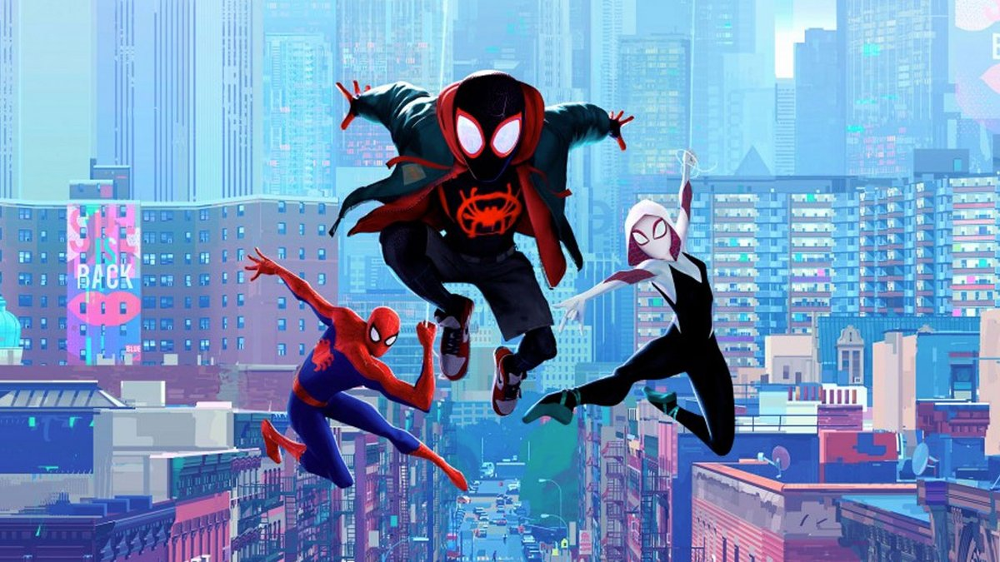

Les origines deMiles Morales
Publié le : 18/10/2023
Temps de lecture : 5 min
Nous sommes nombreux à avoir connu Miles Morales par le biais des films d'animation récemment sortis le mettant en scène. Cependant, Miles est un personnage dont les origines remontent aux années 2010.
Le numéro 4 d'Ultimate Comics est un véritable trésor pour tout fan de comics contemporain. Publié en 2011, cet ouvrage est le fruit de la collaboration de deux talents de l'industrie des comics, à savoir Brian Michael Bendis qui à écrit le scénario et Sara Pichelli qui a réalisé les illustrations. Cette équipe a su captiver les lecteurs avec un récit se déroulant dans l'univers alternatif de Marvel : l'univers Ultimate. Ce dernier a été introduit par Marvel Comics dans les années 2000 dans le but de moderniser certains de leurs super-héros emblématiques, dont Spiderman. Cette continuité alternative permettait aux auteurs de comic-books d'explorer de nouvelles perspectives, de repenser les origines des super-héros et de créer un environnement plus ancré dans le XXIe siècle. Le numéro 4 de cette série s'inscrit dans cet esprit et propose une version alternative de Spiderman, Miles Morales.
La Genèse de Miles
Au cœur de cette histoire se trouve le personnage maintenant emblématique de Miles Morales, un adolescent new-yorkais mordu par une araignée radioactive venant d'une autre dimension. La dualité en tant qu'adolescent ordinaire et super-héros en devenir est au centre de cette aventure tout comme avec Peter Parker en 1963. Mais ce qui rend le numéro 4 d'Ultimate Comics encore plus important, c'est la réception de Miles Morales par les médias extérieurs et par le public. En effet, l'introduction de ce personnage a été saluée par la diversité qu'il apporte à l'univers Marvel et il est devenu un modèle pour de nombreux lecteurs issus de milieux variés, prouvant que tout le monde peut être un super-héros.
Un personnage Cross-Médias
Depuis sa première apparition, Miles a connu un succès phénoménal et a conquis bien d'autres médias. En effet, il apparaît désormais dans sa propre série de comics : Spiderman : Miles Morales, où il poursuit sa quête en tant que Spiderman moderne. Mais Miles est également présent dans le paysage vidéo-ludique avec Marvel's Spiderman : Miles Morales, un jeu acclamé pour sa jouabilité et sa narration de qualité. Mais la popularité de Miles Morales a atteint son paroxysme depuis le film d'animation Spiderman : New generation, qui a reçu nombre d'éloges et a remporté l'Oscar du meilleur film d'animation en 2019. Il explore non seulement les aventures de Miles, mais également de plusieurs Spider-héros de différents univers formant le Spider-verse. Que la suite Across the spider-verse reprend avec encore plus de profondeur.
Un phénomène de grande envergure
On peut en conclure que le numéro 4 de Ultimate Comics a donné naissance à un phénomène culturel au travers de Miles Morales, qui a su tisser sa toile au travers de divers médias. Cette aventure remarquable est un must-have pour tout fan de comics soucieux de découvrir les origines d'un super-héros qui incarne la diversité et l'inspiration.
Bien sûr, les apparitions de Miles dans les comics ne s'arrêtent pas là, en effet, il apparaît aussi seul (ou accompagné d'autres Spider-héros) dans d'autres comics :